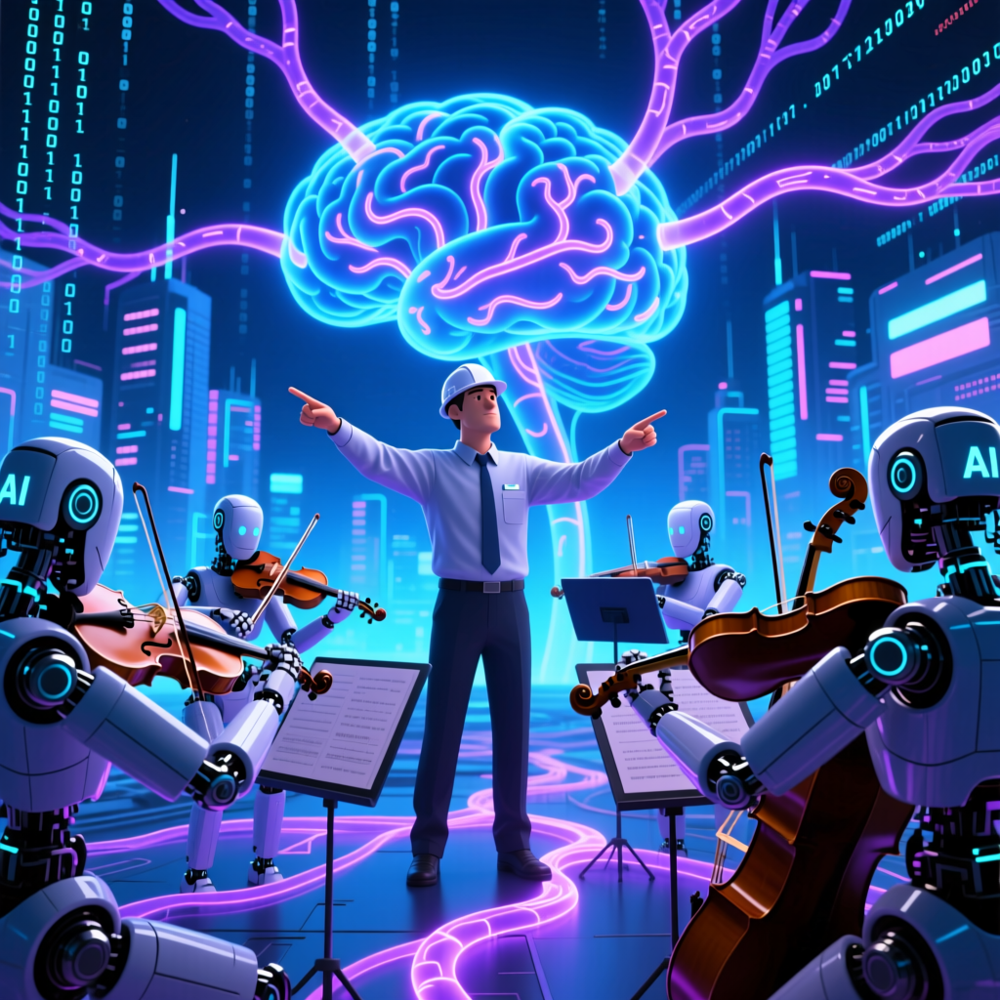

前特斯拉AI總監、OpenAI創始成員 Andrej Karpathy 預言：軟體開發正邁入「3.0時代」，神經網路正逐步取代CPU成為系統主體，傳統程式設計師正面臨職能邊緣化危機。

原片無字幕（所有語言字幕均不可用），系統使用 faster-whisper 自動進行語音轉錄（廣東話/普通話混合），再由 AI 生成繁體中文摘要。
你可以外包思考，但不能外包理解。語法細節可交由 AI 處理，但對記憶體管理、併發控制、業務邏輯本質的掌握，仍是人類不可讓渡的堡壘。
— Andrej Karpathy，前特斯拉AI總監、OpenAI創始成員大模型本身即為「神經網路電腦」，提示詞取代程式碼，上下文視窗即記憶體。開發者不再需要撰寫底層邏輯，只需描述任務目標。
程式設計師從「撰寫底層邏輯」轉為「指揮 AI 代理羣組」，專注於架構設計、風險控管與邏輯理解，確保系統穩定與業務合規。
在數學、程式等可驗證領域，AI 表現卓越（因正確與否有明確標準，強化學習可快速迭代）。但在人類常識與商業邏輯上仍易犯致命錯誤。
未來 API 檔案、伺服器溝通皆以 AI 可讀指令為主。開發者檔案格式朝「代理可讀」演化，捨棄冗長說明，改為可直接執行的 AI 指令片段。
白板演演演演算法測驗將被「多代理協作攻防實戰」取代，考驗候選人能否在 AI 羣體失控時穩住架構，評估系統整合與風險管理能力。
死記語法或框架不再重要，「理解問題本質」與「架構思維」成為不可替代的專業資產。人類角色從「撰碼者」轉為「代理工程師」。
| 時代 | 核心模式 | 開發者角色 | 主要工具 | AI 角色 |
|---|---|---|---|---|
| 軟體 1.0 | 人類預先定義規則 | 代碼編寫者 | 編譯器、IDE | 無 |
| 軟體 2.0 | 依賴資料訓練權重 | 數據標籤者、教練 | ML 框架、GPU | 輔助工具 |
| 軟體 3.0 | 神經網路為獨立運算單元 | 代理工程師、架構師 | 自然語言提示詞 | 核心執行者 |
OpenCloth 安裝：傳統需撰寫批次指令碼並手動適配作業系統；3.0 情境中，僅需提供一段文字描述，AI 即能自動判斷系統環境、執行命令、迴圈除錯直至成功。
MenuGen 應用重建：過去需整合 OCR 辨識、影象生成 API、前端渲染等多模組程式碼，耗時且易出錯；如今僅需上傳選單照片並輸入提示詞，模型即直接輸出視覺化結果。
| 能力類型 | AI 表現 | |
|---|---|---|
| 數學運算與證明 | ✅ 卓越 | 理解問題本質、定義新問題 |
| 代碼撰寫與偵錯 | ✅ 卓越 | 記憶體管理、併發控制概念 |
| 商業邏輯判斷 | ⚠️ 有限制 | 理解業務本質、客戶需求 |
| 人類常識推理 | ❌ 不足 | 日常推理、直覺判斷 |
| 風險管理 | ❌ 不足 | 安全邊界設計、漏洞修補 |
在涉及人類常識或商業規則時（如唯一使用者ID繫結），AI 可能因缺乏深層理解而釀成災難性錯誤。代理工程師的核心職責之一，就是設計代理行為規範、設定安全邊界、驗證輸出品質。
Karpathy 強調「你可以外包思考，但不能外包理解」。面對 AI 代理時代，程式設計師的生存策略不是與 AI 競爭代碼產出，而是升級為「理解系統本質」的架構師與風險治理專家。核心競爭力在於：理解問題本質、架構思維、風險建模，以及對業務邏輯的深層掌握。